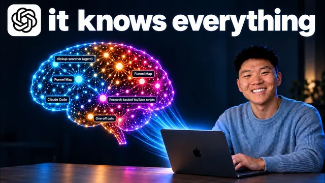

GPT-6 Astra를 완전체 세컨드 브레인으로 만들었다

원본 영상 보기 →
- 맥락과 연결이 먼저다
- agents.md/cloud.md는 라우팅 맵이다
- 머릿속을 비우는 게 목표
한 줄 요약
GPT-6 Astra로 '제2의 두뇌'와 'AI 운영체제(AI OS)'를 구축하는 방법을, 맥락·연결·역량·주기(4C) 프레임워크와 온보딩·감사·레벨업·3D 브레인 등 무료 스킬을 통해 처음부터 세팅하는 과정으로 보여주는 영상이다.
전체 내용 정리
AI 운영체제란 무엇이고 왜 강력한가
발표자 Nate는 자신이 아는 모든 것과 사업에 관한 모든 것을 하나의 시스템에 저장·활용하는 '제2의 두뇌'를 만들고, 그 위에서 Codex와 GPT-6 Astra로 대부분의 업무를 처리한다. 이 인터페이스 안에서는 단순한 챗봇이 아니라 자기 삶과 사업에서 일어나는 모든 것을 아는 공동창업자와 대화하는 느낌이 든다고 한다. 비즈니스 위키에는 코칭·기업 구조·커뮤니티 같은 항목과 그 사이의 관계, 각 정보가 얼마나 오래됐는지(업데이트 필요 여부)까지 표시된다. 회의 자료, 자신이 만든 모든 유튜브 영상의 지식, Claude 메모리와 Codex 메모리, 프로젝트·스킬·에이전트가 합쳐져 하나의 두뇌를 이룬다. 이 두뇌를 전용 OS 대시보드로 옮겨 캘린더 동기화, 유튜브 구독자 수 등 통계 동기화, Slack·ClickUp·이메일 동기화, 회의 요약, 유튜브 상위 댓글과 업계 동향까지 한눈에 본다. 모두 GPT-6 Astra로 만들었다.
4C 프레임워크: 맥락, 연결, 역량, 주기
AI OS는 맥락(Context)·연결(Connections)·역량(Capabilities)·주기(Cadence)로 구성된다. 앞의 둘이 '제2의 두뇌', 뒤의 둘이 실제 AI OS에 해당한다. 맥락은 삶에서 크게 변하지 않는 것들로, 분기·연간 목표, 사업 내용, 고객층, 고충 사항 같은 것이다. 연결은 매일 쓰는 도구들로, 그 안의 데이터는 늘 새로 들어오고 계속 바뀐다 — 이메일, 대화 내용, Slack, ClickUp, 프로젝트 관리, 재무 정보 등이다. AI OS가 모든 맥락을 파악하는 동시에 필요할 때 즉시 최신 정보를 가져올 수 있어야, 질문에 모호한 답 대신 무엇을 해야 할지 정확히 아는 결과가 나온다. 예를 들어 Codex에게 "AI 자동화 협회를 위한 홍보 영상을 만들어 줘"라고만 했는데, AI가 맥락을 알고 스쿨 커뮤니티에 직접 접속해 화면을 캡처하고 그가 말한 내용을 영상에 반영했다. 역량은 새 스킬·에이전트, 주기는 자율적으로 실행되는 에이전트·자동화인데, 앞의 두 요소가 없으면 이 기술들은 평범해지고 자동화도 뻔해진다.
제대로 구축됐는지 확인하는 세 가지 테스트
첫째, 팀원이 질문했을 때 AI OS가 정확한 출처를 근거로 더 빠르고 낫게 답하면 좋은 신호다. 둘째, 맥락 전환의 감소다 — 새 탭을 열어 예전 방식으로 하지 말고 이 인터페이스 안에서만 처리하도록 강제해본다. 셋째, 머릿속 지식을 비워내는 것이다 — 지난 분기에 무엇을 결정했는지, 고객이 회의에서 무슨 말을 했는지 외우려 애쓰지 말고 AI OS에 물어보면 Slack 스레드·이메일·회의 기록에서 찾아준다.
무료 리소스 팩과 다섯 가지 스킬
설명란 링크의 무료 스쿨 커뮤니티에 가입해 'Classroom → 모든 유튜브 리소스 → AI OS 리소스 팩'을 받으면 다섯 가지 스킬이 들어 있다. 온보딩 스킬은 전체 프로젝트 구조와 파일·폴더를 자동 생성한다. 감사(audit) 스킬은 AI OS를 수시로 점검한다. 링크 스킬은 필요할 때 여러 파일로 경로를 안내한다. 레벨업 스킬은 감사 결과에 따라 어떤 작업을 해야 하는지 알려준다. 3D 브레인 스킬은 지식을 실제 3D 두뇌로 시각화한다.
agents.md — 에이전트를 위한 라우팅 맵
agents.md는 Claude의 claude.md와 같은 개념으로, Codex가 더 익숙하게 읽는 파일이다. Codex를 쓰던 사람이라면 기존 claude.md를 복사해 이름만 agents.md로 바꾸면 되고 내용은 완전히 동일하다. Nate의 파일은 "당신은 Nate AI 운영 체제입니다"로 시작해 역할을 규정하고, 간결하게 말하기·글머리 기호 사용·엠 대시 쓰지 않기·옥스퍼드 콤마 사용 같은 핵심 운영 규칙을 담는다. 하지만 대부분은 라우팅 맵이다 — 비즈니스 조언·팀 업무·OTA 정보가 필요하면 위키를 확인하고, 기업 구조나 법인 정보는 위키의 특정 섹션을, Nate의 말투는 여기를 보라는 식이다. 에이전트는 실행될 때마다 이 내용을 먼저 읽고 나서 사용자 메시지를 읽기 때문에, 무언가를 요청받으면 어디를 봐야 할지 안다.
초보자를 위한 세팅 단계
컴퓨터의 바탕 화면에 새 폴더를 만들고(예: 'AIS OS 데모') Codex 데스크톱 앱에서 연다. 앱이 없으면 다운로드하고 구독한다. Codex에서 '새 프로젝트 → 로컬 프로젝트 생성 → 이름 지정 → 그 폴더 선택 → 프로젝트 생성'을 누른다. 리소스 팩 URL을 채팅창에 붙여넣고 "이걸 설치하고 온보딩을 실행해 내 AI OS를 구축하도록 정보를 입력하게 해줘"라고 말한다. 온보딩이 시작되면 답변을 저장하며 진행하고, 처음엔 비어 있던 폴더가 채워진다. 컨텍스트 폴더에 비즈니스 컨텍스트 마크다운 파일들과 agents.md가 생성되고, 최근 글을 붙여 넣으라고 요청해 글쓰기 스타일(references/voice.md)을 파악한다. 온보딩 질문 일곱 개를 마친 뒤 새 스레드에서 "안녕, 내가 누구지?"라고 물으면 프로필을 먼저 확인하고 답한다. about business·about me·priority 같은 파일에 정보가 채워진다. 클라우드 코드로 넘어갈 때를 대비해 .cloud 폴더나 cloud.md도 함께 만들어주므로 특정 생태계에 갇히지 않는다 — agents.md와 cloud.md는 기본적으로 동일하다.
연결 채우기와 감사·레벨업 루프
다음으로 북마크, 데스크톱 앱, 매주 가장 많이 쓰는 앱을 살펴본다. 수익·고객·일정·커뮤니케이션·업무·미팅·지식 측면에서 생각하면 좋다. Codex에게 "스쿨에 연결하고 싶어, 스트라이프에 연결하고 싶어, 유튜브에 연결하고 싶어, 어떻게 하지?"라고 물으면 API 키를 얻어야 하는지, MCP 서버를 써야 하는지, 브라우저 사용 기능이 필요한지 알려준다. 그다음 /audit을 실행하면 AI OS를 확인하고 4C 요소를 검토해 점수를 매기며, agents.md·cloud.md 동기화도 체크한다. AI OS 안에 audits 폴더가 생기고 결과 보고서가 저장되므로, 매주 월요일이나 2주마다 실행하면 점수 변화를 달마다 확인할 수 있다. 방금 만든 시스템은 30점이 나왔다. 이어 /level-up을 실행하면 감사 보고서를 분석해 개선 영역을 제안한다 — 예로 "팀 업데이트를 하나의 명확한 작업 목록으로 바꾸자"는 제안이 나왔고, 이는 AI 학습과 영상 제작 시간을 뺏는 조정 업무라는 병목을 겨냥한 것이었다. 감사 → 레벨업 → 구축 루프를 계속 돌린다.
데이터를 더 넣는 법 — Grill Me와 LLM 위키
자동화 자체는 쉽고, 진짜 문제는 머릿속 지식을 시스템으로 옮기는 것이다. Matt Pocock의 'Grill Me'에서 영감을 받은 스킬은 온보딩 질문과 비슷하지만 독립된 스킬로서 끊임없이 질문을 퍼붓는다. "내 사업의 현재 우선순위에 대해 가능한 한 많이 알아내 줘"라고 하면 20~30분씩 인터뷰하며 그 내용을 새 마크다운 파일에 저장한다. 정보 간 관계를 형성하려면 Karpathy의 LLM 위키를 쓴다 — AI가 데이터 소스를 탐색해 연결 고리를 찾아준다. 설명란 URL의 내용을 복사해 새 채팅에서 "내 정보를 바탕으로 새 LLM 위키를 만들어 줘, 내 비즈니스 데이터를 이 Karpathy 위키 방식으로 정리해 줘"라고 하고 프롬프트를 붙여넣는다. Nate는 유튜브 영상용, 지식 저장용, 회의록용으로 위키를 따로 관리하지만 처음에는 비즈니스용 하나로 시작해도 된다. Grill Me와 LLM 위키를 거친 뒤 3D 브레인 스킬을 실행하면 모든 지식이 시각화되고, 요청하면 웹사이트 형태로 바꿔 여러 기기에서 접근하거나 커스텀 도메인을 연결할 수도 있다.
모델 선택 — Astra만 쓰지 않는다
Astra는 매우 강력하지만 5.6 Sol과 5.6 Terra도 있다. "이 문서 찾아 줄래?", "스프레드시트 작성 도와줄래?" 같은 대부분의 지식 작업에 Astra는 과하다. 처음엔 Astra로 몇 가지를 만들며 작동 방식에 익숙해지되, 여러 스킬을 연결하기 시작하면 5.6 Sol을 권한다 — Astra는 주간 사용 제한을 금방 소진하고 5.6 Sol보다 비싸 사용량을 훨씬 많이 차지한다. 노력 수준(effort level)도 조절할 수 있어, 가볍게 설정하면 기능은 줄지만 저렴해진다. 결국 구축하는 모든 것은 파일과 폴더이며, 이는 벤더 종속 없이 자신이 소유하는 자산이자 가장 가치 있는 지식 기반이 된다. 새 도구나 모델로 전환해도 걱정할 필요가 없고 모든 에이전트가 이를 활용할 수 있다.
핵심 인사이트
- 맥락과 연결이 먼저다: 스킬과 자동화(역량·주기)는 맥락(잘 안 변하는 목표·사업·고객)과 연결(매일 바뀌는 이메일·Slack·재무)이 없으면 평범한 결과만 낸다. 순서를 지켜 4C를 쌓아야 AI가 모호한 답 대신 정확한 실행을 내놓는다.
- agents.md/cloud.md는 라우팅 맵이다: 규칙을 몇 줄 적는 것보다, "어떤 요청이면 어떤 파일·위키 섹션을 봐라"를 명시한 지도가 핵심이다. 에이전트는 매 실행마다 이걸 먼저 읽는다.
- 머릿속을 비우는 게 목표: 작은 작업 자동화는 쉽다. 어려운 건 결정·회의·고객 발언을 전부 시스템으로 옮기는 것이다. Grill Me 인터뷰와 LLM 위키가 이 이관을 돕는다.
- 감사·레벨업을 루틴으로: /audit으로 점수를 기록하고 /level-up으로 다음 할 일을 받는 루프를 2주 단위로 돌리면 시스템이 달마다 개선된다.
오늘 당장 해볼 것
- 바탕 화면에 폴더 하나를 만들고 그 안에 'context' 하위 폴더를 둔 뒤, "우리 사업이 무엇인가 / 고객은 누구인가 / 올해 목표 / 반복되는 고충" 네 가지를 각각 마크다운 파일로 적어 넣는다. 자주 안 바뀌는 정보만 넣는다.
- 그 폴더 루트에 짧은 라우팅 문서(agents.md 또는 cloud.md)를 만들어, "제품 관련 질문이면 X 파일, 고객 관련이면 Y 파일, 내 말투는 Z 파일을 봐라"는 식으로 위치 지도를 적는다.
- 2주에 한 번 AI 도구에 "이 폴더를 검토해 맥락·연결·역량·주기 관점에서 부족한 부분과 점수를 알려 줘"라고 요청하는 일정을 잡고, 나온 개선 제안 중 하나를 실행한다.